VANCOUVER
温哥华 爱上温哥华，如此简单。
2025.10.17 — 10.21 航班 · 铁路 · 公共交通 · 骑行
清晨的红叶与加拿大雁 往返交通 地图行程 每日记录 精选照片 38 旅行随记 从 Riverside 乘列车和机场巴士出发，经西雅图中转抵达温哥华。三天的公交、海湾与环园骑行之后，返程还留了一段洛杉矶机场观机的时间。
温哥华停留：10 月 18—20 日。
完整行程 DAY 01 10.17DAY 02 10.18DAY 03 10.19DAY 04 10.20DAY 05 10.21
全程往返 市区细看
照片位置 放大地图查看照片
公共交通按线路或途经站点绘制，均为行程示意；未记下的具体班次留空。航班连线非实际飞行轨迹。
往返交通 21 段 往返交通与班次 日期 路段 交通 / 班次 10.17 Riverside–Downtown 站 → 洛杉矶联合车站 铁路 Metrolink · 91/Perris Valley Line 10.17 洛杉矶联合车站 → 洛杉矶机场 巴士 FlyAway 10.17 洛杉矶机场 → 西雅图机场中转 航班 AS1093 实际 18:31 → 21:00 计划 18:10 → 21:02 10.17 西雅图机场中转 → 温哥华机场 航班 AS2100 实际 23:46 → 00:19 +1 计划 23:10 → 00:10 +1 10.18 温哥华机场 → King Edward 站 铁路 Canada Line 10.18 King Edward 站 → Olympic Village 站 铁路 Canada Line 10.18 Hornby Street 轮渡码头 → 格兰维尔岛 轮渡 Aquabus 10.18 West 2nd Avenue / Anderson Street 站 → Waterfront Station 巴士站 巴士 50 路 10.19 Richmond–Brighouse 站 → Vancouver City Centre 站 铁路 Canada Line 10.19 Georgia / Denman 公交站 → Ridgewood Drive / Norcross Way 站 巴士 246 路 10.19 Ridgewood Drive / Norcross Way 站 → 卡皮拉诺吊桥 步行 步行 10.19 Ridgewood Drive / Norcross Way 站 → Georgia / Denman 公交站 巴士 246 路 10.19 Georgia / Denman 公交站 → Marine Drive / Fell Avenue 公交站 巴士 240 路 10.19 Marine Drive / Bewicke Avenue 站（候选） → 北岸朗斯代尔码头 巴士 R2 10.19 北岸朗斯代尔码头 → 滨海站 轮渡 SeaBus 10.20 Langara–49th Avenue 站 → 温哥华机场 铁路 Canada Line 10.20 温哥华机场 → 西雅图机场中转 航班 AS2030 15:30 → 16:41 10.20 西雅图机场中转 → 洛杉矶机场 航班 AS1224 19:59 → 22:48 10.21 洛杉矶机场 → 洛杉矶机场周边观机 停留 机场周边观机 10.21 洛杉矶机场 → 洛杉矶联合车站 巴士 FlyAway 10.21 洛杉矶联合车站 → Riverside–Downtown 站 铁路 Metrolink · Riverside Line
航班时间均为各机场当地时间。
路上的停留点 点击地点，在地图上定位。
01 RiversideRiverside ↗ 02 洛杉矶联合车站Los Angeles Union Station ↗ 03 洛杉矶机场Los Angeles International Airport · LAX ↗ 04 西雅图机场中转Seattle–Tacoma International Airport · SEA ↗ 05 温哥华机场Vancouver International Airport ↗ 06 伊丽莎白女王公园Queen Elizabeth Park ↗ 07 格兰维尔岛Granville Island ↗ 08 温哥华观景塔Vancouver Lookout ↗ 09 煤气镇Gastown ↗ 10 唐人街Chinatown ↗ 11 列治文Richmond ↗ 12 卡皮拉诺吊桥Capilano Suspension Bridge Park ↗ 13 加拿大广场与海港Canada Place / Coal Harbour ↗ 14 史丹利公园Stanley Park ↗ 15 英吉利湾English Bay ↗ 16 北岸朗斯代尔码头Lonsdale Quay ↗ 17 滨海站Waterfront ↗ 18 不列颠哥伦比亚大学University of British Columbia ↗ 19 洛杉矶机场周边观机Aircraft spotting near LAX ↗ 20 列车途经 IndustryIndustry station · Riverside Line ↗ 21 Riverside–Downtown 站Riverside–Downtown 站 ↗ 22 King Edward 站King Edward 站 ↗ 23 Olympic Village 站Olympic Village 站 ↗ 24 Richmond–Brighouse 站Richmond–Brighouse 站 ↗ 25 Vancouver City Centre 站Vancouver City Centre 站 ↗ 26 Georgia / Denman 公交站Georgia / Denman 公交站 ↗ 27 Ridgewood Drive / Norcross Way 站Ridgewood Dr / Norcross Way · Capilano Road ↗ 28 Marine Drive / Fell Avenue 公交站Marine Drive / Fell Avenue 公交站 ↗ 29 Hornby Street 轮渡码头Hornby Street Dock ↗ 30 Marine Drive / Bewicke Avenue 站（候选）Marine Dr / Bewicke Ave ↗ 31 Granville Street / Drake Street 站（候选）Granville St / Drake St ↗ 32 Langara–49th Avenue 站Langara–49th Avenue ↗ 33 West 2nd Avenue / Anderson Street 站West 2nd Ave / Anderson St ↗ 34 Waterfront Station 巴士站Waterfront Station Bay 2 ↗ 每日记录 5 天 DAY 01 10.17
洛杉矶 · 西雅图转机 铁路＋机场巴士＋两段航班 在 Riverside–Downtown 搭乘 Metrolink 91/Perris Valley Line 到洛杉矶联合车站，转 FlyAway 到 LAX；搭 AS1093 到西雅图，再转 AS2100，于 18 日凌晨抵达 YVR。
Riverside–Downtown 站 → 洛杉矶联合车站 → 洛杉矶机场 → 西雅图机场中转 → 温哥华机场
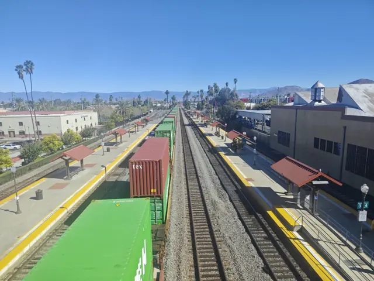
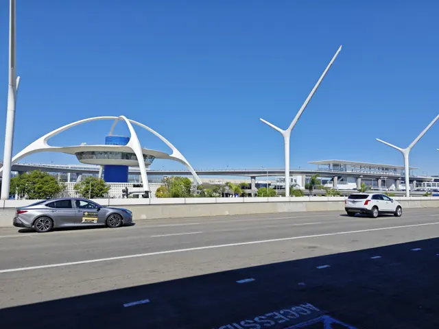
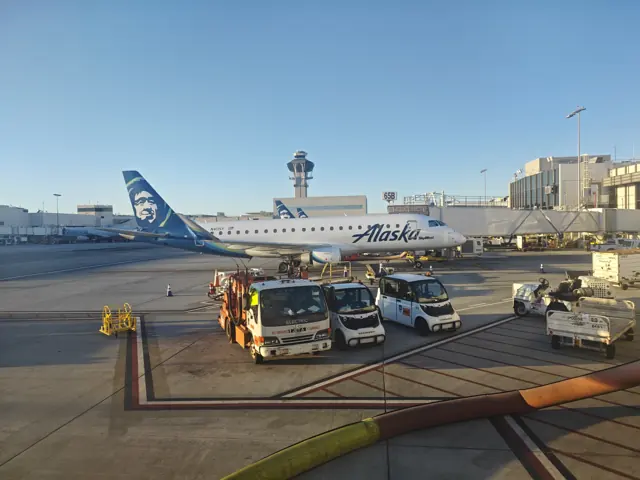
看这一天的 5 张照片 ↗ DAY 02 10.18
女王公园 · 格兰维尔岛 · 市中心 Canada Line＋Aquabus＋公交＋步行 从机场搭 Canada Line 到 King Edward，先逛伊丽莎白女王公园与温室，再搭 Canada Line 到 Olympic Village。从 Hornby Street 码头坐 Aquabus 到格兰维尔岛，之后乘 50 路到 Waterfront 一带，走到观景塔，再沿煤气镇走到唐人街。
温哥华机场 → King Edward 站 → 伊丽莎白女王公园 → Olympic Village 站 → Hornby Street 轮渡码头 → 格兰维尔岛 → 温哥华观景塔 → 煤气镇 → 唐人街
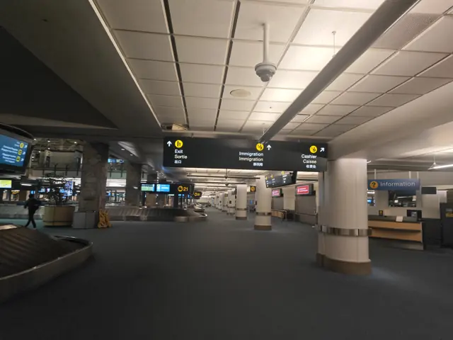
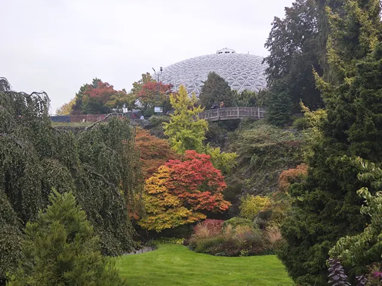
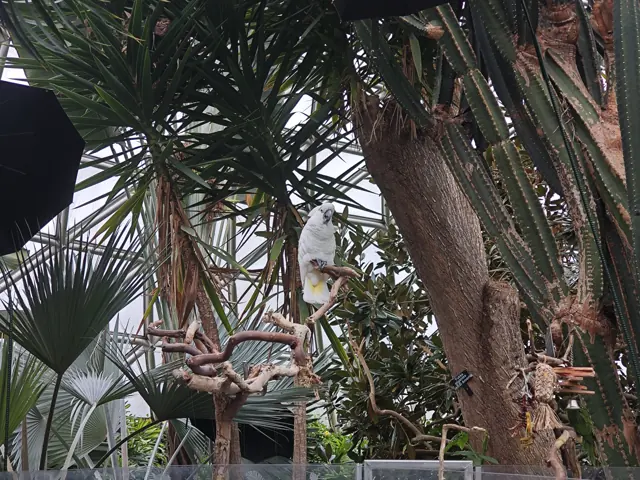
看这一天的 9 张照片 ↗ DAY 03 10.19
列治文 · 吊桥 · 史丹利公园 · 北岸 Canada Line＋常规公交＋自行车＋SeaBus 从列治文搭 Canada Line 回市中心，乘 246 路到 Ridgewood Drive，下车步行去卡皮拉诺吊桥，再坐 246 路返回。下午租自行车环骑史丹利公园，在英吉利湾看日落。晚上从 Georgia / Denman 搭 240 路去北岸，在 Marine Drive 换 R2 到朗斯代尔码头，坐 SeaBus 返回市区。
列治文 → Richmond–Brighouse 站 → Vancouver City Centre 站 → Georgia / Denman 公交站 → Ridgewood Drive / Norcross Way 站 → 卡皮拉诺吊桥 → 加拿大广场与海港 → 史丹利公园 → 英吉利湾 → Marine Drive / Fell Avenue 公交站 → Marine Drive / Bewicke Avenue 站（候选） → 北岸朗斯代尔码头 → 滨海站
看这一天的 9 张照片 ↗ DAY 04 10.20
史丹利公园 · UBC 公交＋Canada Line＋步行＋两段航班 清晨再到史丹利公园，回酒店取行李后搭巴士，经 Granville Bridge 去 UBC。中午在 Langara–49th Avenue 搭 Canada Line 去机场，乘 AS2030 到西雅图，再乘 AS1224 回洛杉矶。
史丹利公园 → Granville Street / Drake Street 站（候选） → 不列颠哥伦比亚大学 → Langara–49th Avenue 站 → 温哥华机场 → 西雅图机场中转 → 洛杉矶机场
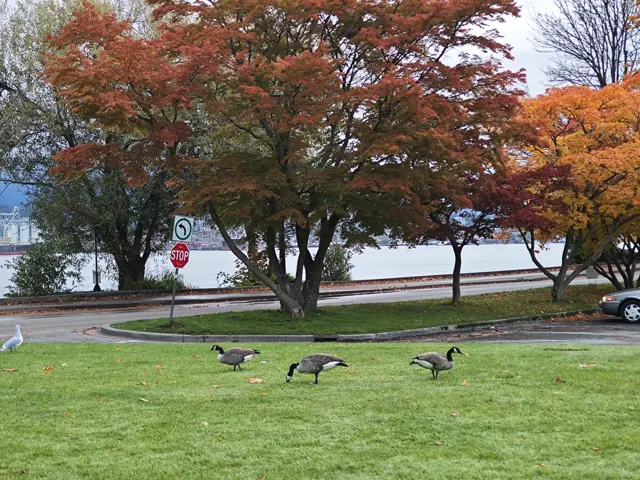
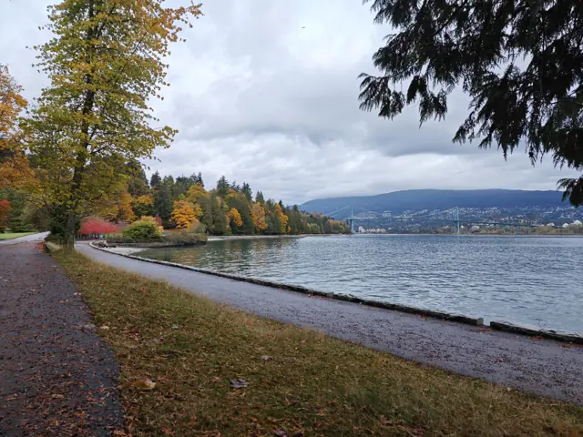
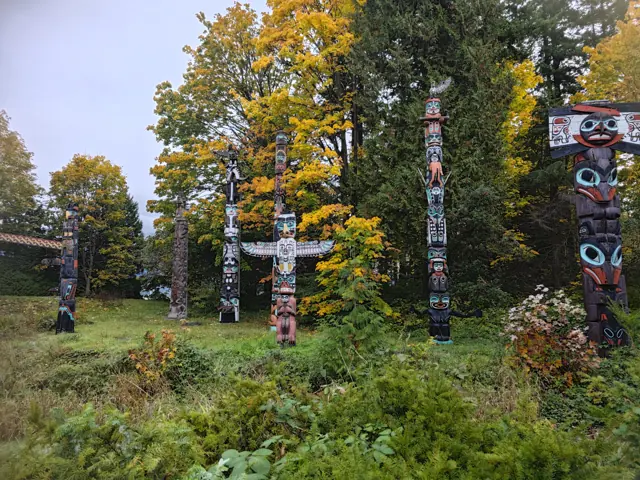
看这一天的 12 张照片 ↗ DAY 05 10.21
洛杉矶机场观机 观机＋机场巴士＋铁路 早上至中午留在 LAX 周边拍飞机。之后乘 FlyAway 到联合车站，再搭 Metrolink，沿途经过 Industry，傍晚返回 Riverside。
洛杉矶机场 → 洛杉矶机场周边观机 → 洛杉矶联合车站 → 列车途经 Industry → Riverside
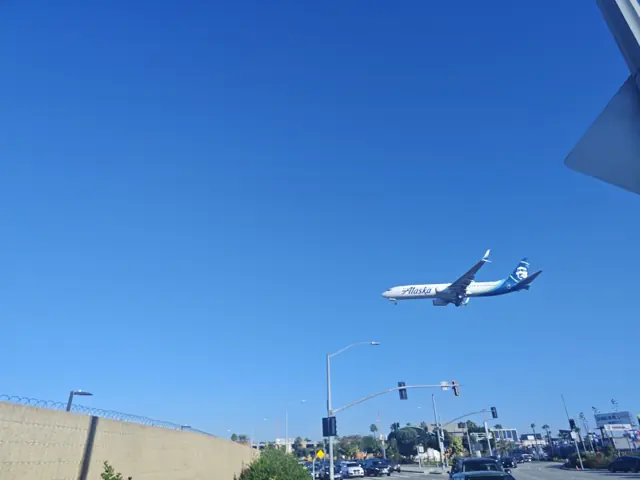
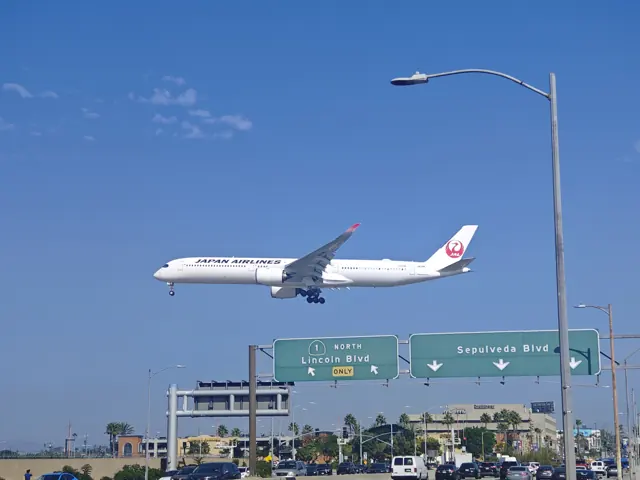
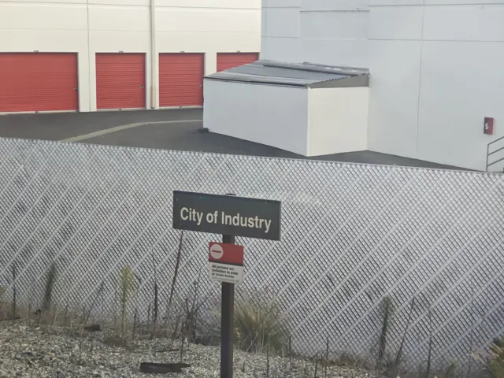
看这一天的 3 张照片 ↗
↗ 从 Riverside 出发的列车沿线 10.17 · 10:49 Riverside 出发的铁路沿线 ↗ 去程经过洛杉矶机场主题建筑 10.17 · 13:47 洛杉矶机场 ↗ 去程在洛杉矶机场候机 10.17 · 17:40 洛杉矶机场 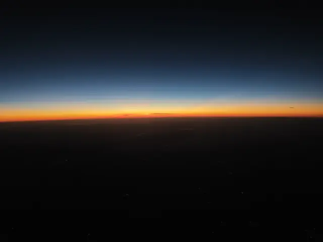
↗ 前往西雅图途中，舷窗外的一线日落 10.17 · 18:49 飞往西雅图途中 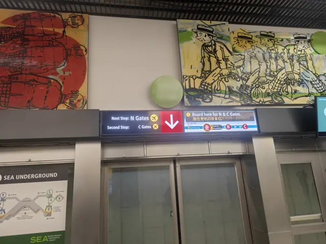
↗ 西雅图机场的中转通道 10.17 · 21:21 西雅图机场中转 ↗ 凌晨抵达温哥华机场 10.18 · 00:40 温哥华机场 ↗ 伊丽莎白女王公园的秋色 10.18 · 12:14 伊丽莎白女王公园 ↗ 布洛德尔温室中的热带绿意 10.18 · 12:30 伊丽莎白女王公园 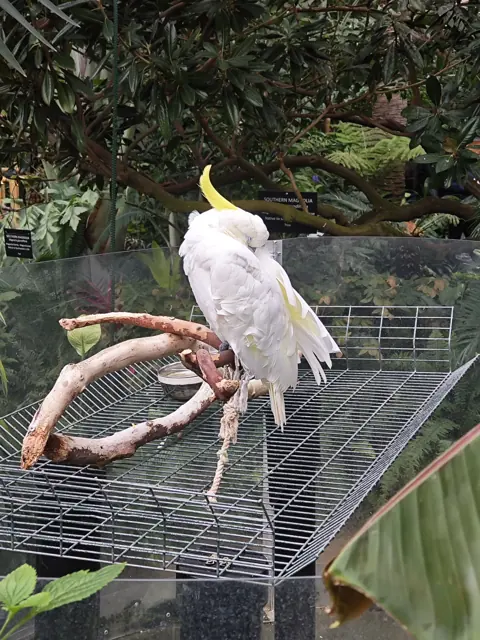
↗ 温室里停在枝头的鸟 10.18 · 12:31 伊丽莎白女王公园 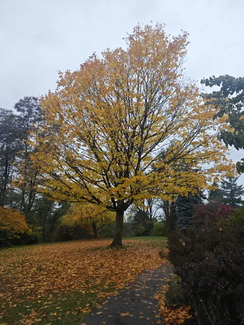
↗ 公园里一树金黄 10.18 · 12:39 伊丽莎白女王公园 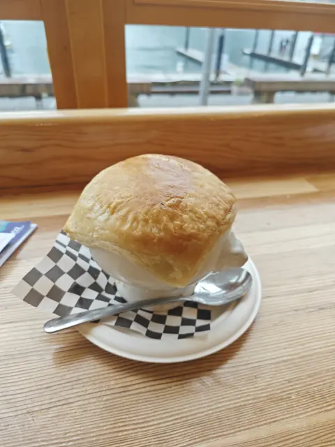
↗ 市场里的酥皮蛤蜊汤 10.18 · 14:17 格兰维尔岛 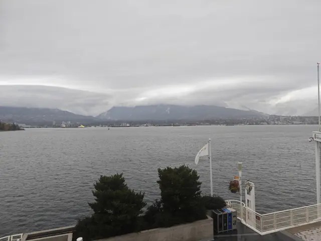
↗ 从观景塔远望雨中的港湾 10.18 · 16:41 温哥华观景塔 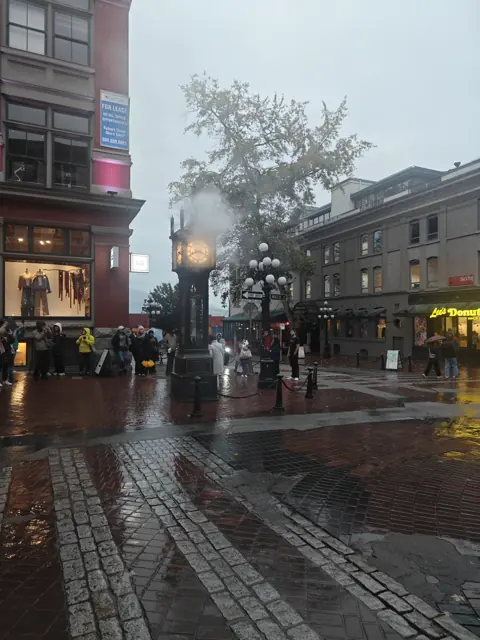
↗ 雨中的煤气镇街道 10.18 · 16:59 煤气镇 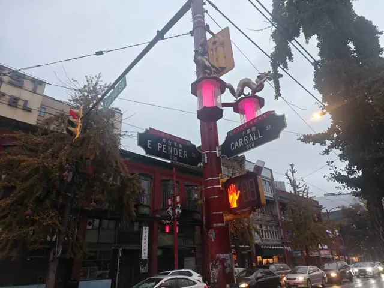
↗ 唐人街的灯笼与街牌 10.18 · 17:39 唐人街 ↗ 在列治文吃一份熟悉的饭 10.19 · 12:46 列治文 ↗ 吊桥横跨森林与峡谷 10.19 · 14:26 卡皮拉诺吊桥 ↗ 秋日树林中的卡皮拉诺吊桥 10.19 · 14:55 卡皮拉诺吊桥 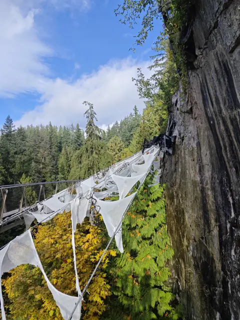
↗ 悬在岩壁一侧的 Cliffwalk 10.19 · 15:12 卡皮拉诺吊桥 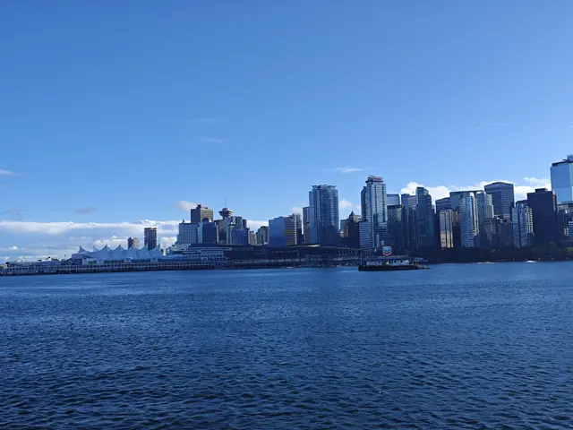
↗ 从海港望向温哥华天际线 10.19 · 16:28 加拿大广场与海港 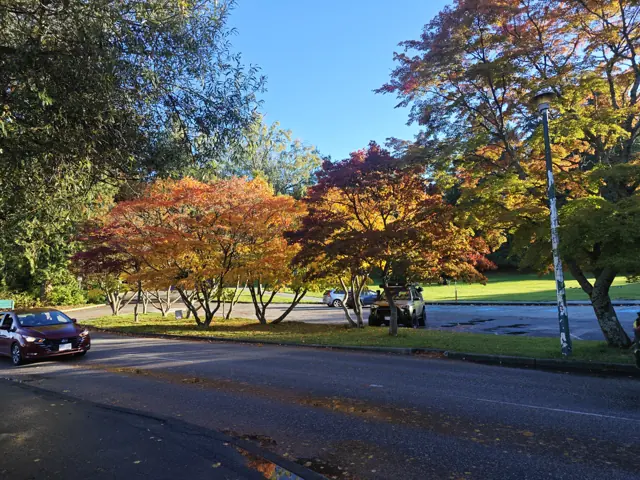
↗ 骑行路旁的红叶与金黄 10.19 · 16:44 史丹利公园 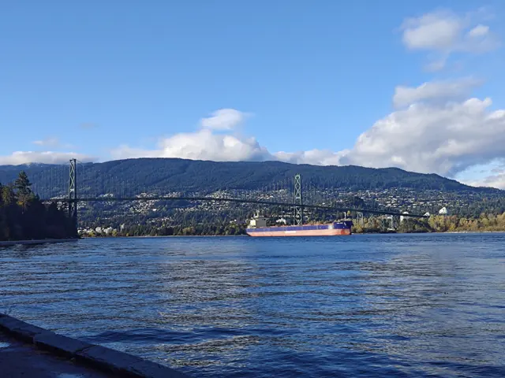
↗ 海堤边远望狮门大桥 10.19 · 16:53 史丹利公园 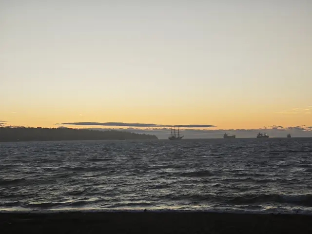
↗ 英吉利湾的一线落日 10.19 · 18:21 英吉利湾 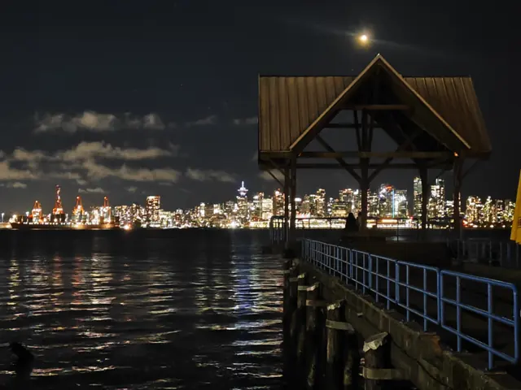
↗ 夜晚从北岸看向市中心 10.19 · 20:24 北岸朗斯代尔码头 ↗ 清晨的红叶与加拿大雁 10.20 · 08:07 史丹利公园 ↗ 沿着海湾延伸的秋色 10.20 · 08:10 史丹利公园 ↗ 史丹利公园里的图腾柱 10.20 · 08:24 史丹利公园 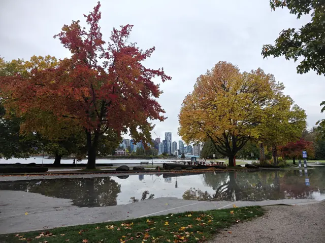
↗ 池水映着城市与秋树 10.20 · 08:25 史丹利公园 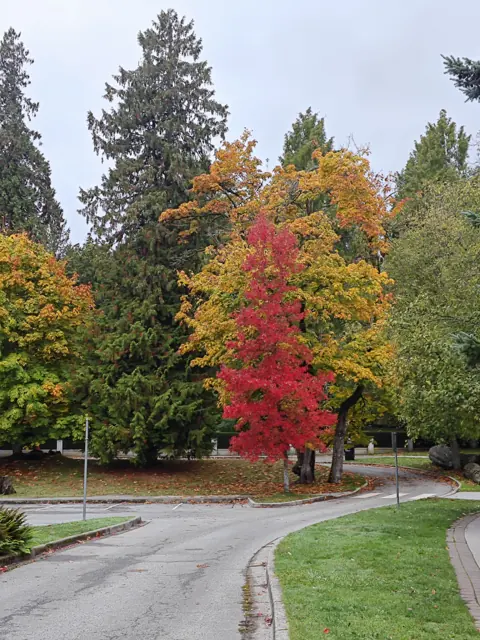
↗ 再次走过公园旁的红叶街道 10.20 · 09:03 史丹利公园 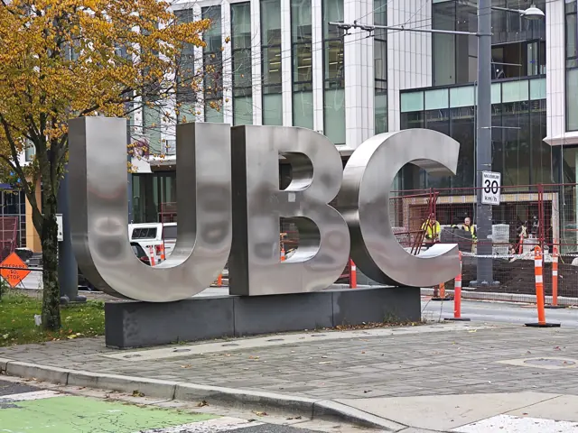
↗ 来到 UBC 校园 10.20 · 10:52 不列颠哥伦比亚大学 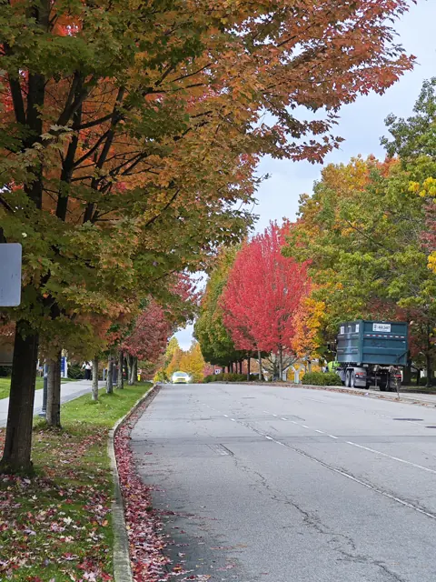
↗ 校园街道尽头的一抹红 10.20 · 11:03 不列颠哥伦比亚大学 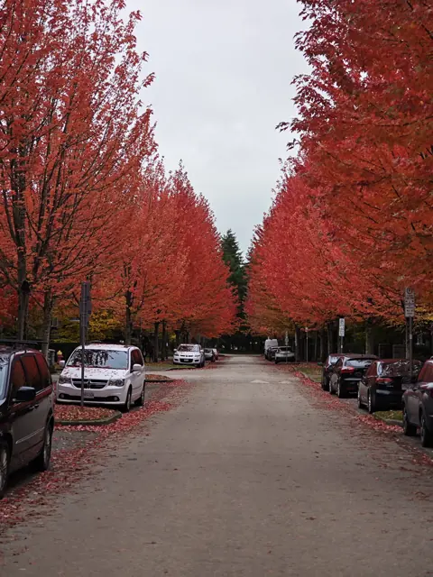
↗ 成排红叶夹着一条街道 10.20 · 11:12 不列颠哥伦比亚大学 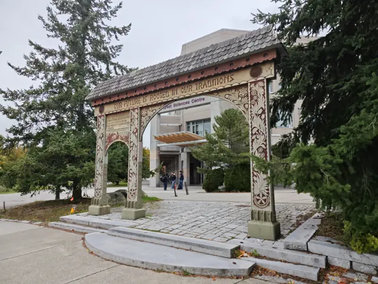
↗ 校园里的牌坊 10.20 · 11:17 不列颠哥伦比亚大学 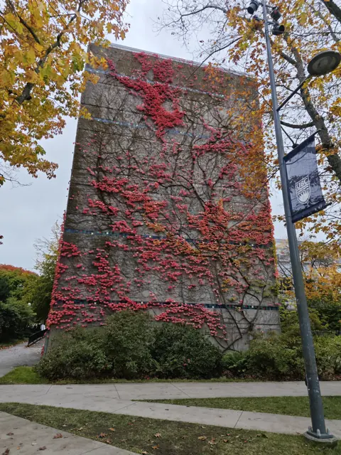
↗ 攀着红叶的校园建筑 10.20 · 11:25 不列颠哥伦比亚大学 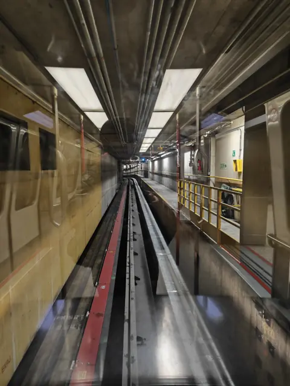
↗ 返程在西雅图机场乘列车接驳 10.20 · 18:42 西雅图机场中转 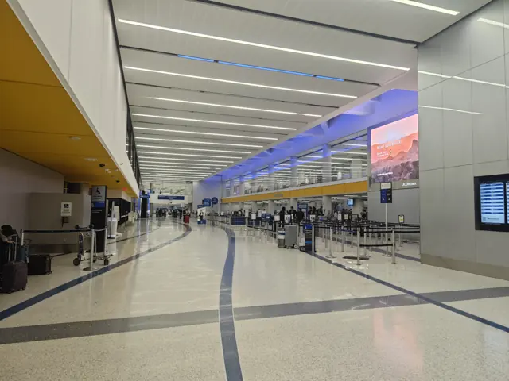
↗ 当晚回到洛杉矶机场 10.20 · 22:57 洛杉矶机场 ↗ 早晨在 LAX 周边看飞机进近 10.21 · 08:47 洛杉矶机场周边观机 ↗ 中午前，飞机从观机点上空掠过 10.21 · 11:06 洛杉矶机场周边观机 ↗ 回 Riverside 的列车途经 Industry 10.21 · 16:13 列车途经 Industry 暂无照片。
NOTES FROM THE ROAD
旅行随记 VANCOUVER
爱上温哥华，如此简单。
温哥华的秋没有京都那么浓烈，没有那种漫山遍野的火红，而是镶嵌在路边和林中星星点点的红与黄。但这并不影响温哥华的迷人。沿着史丹利公园岸边骑行，在狮门大桥下远望北温群山，成片的翠绿中间夹杂这些许黄色，低矮的平房倚着山坡修建。河岸转角处，不经意间又会惊喜地出现整片鲜艳的红叶，令人忍不住驻足停留。
温哥华的天气并没有那么令人满意，在温哥华的三天只有半天能看到阳光。但和其他城市不一样，雨天温哥华也没有那么令人扫兴。在Granville的公共市场，点一份酥皮蛤蜊汤，望着窗外雨中的温哥华城区；煤气镇上的蒸汽钟仍然会在整点发出那古老又响亮的钟声，涌出的蒸汽给本就氤氲着水汽的街道又增添了几份朦胧，恍惚间在复古的街道上穿越到了工业时代。
温哥华最特别的一点莫过于它对中国人独有的那种的亲切感。从Richmond车站一下车，一股熟悉的感觉扑面而来：无论是熟悉的品牌和店铺上方横挂着的五颜六色的中文招牌，还是街上来来往往的亚洲面孔和流利的中文服务，即使身处太平洋对岸，也总给我一种家乡的味道。坐在市场里点上一份肠粉，和周围的人用熟悉的语言聊天，再也没有了语言不通和文化差异的困扰，只剩下纯粹的交流。
虽说原本只是单纯地想来看看枫叶国的枫叶到底是什么样的，但温哥华给我带来的惊喜还有太多太多。温哥华不是一座来特种兵旅游的城市，而是放慢脚步，享受这一切。